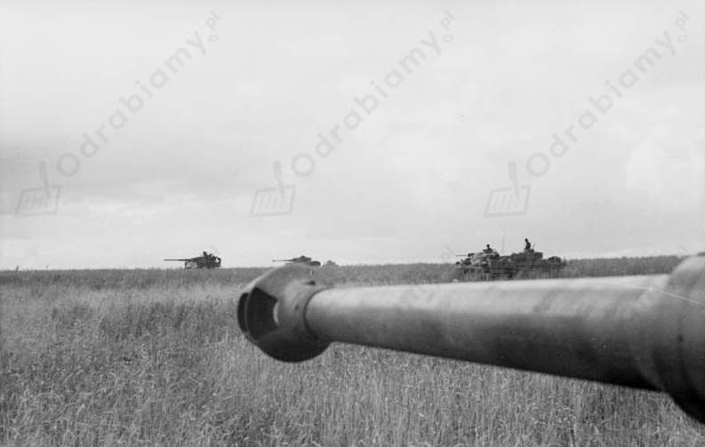

Formalnie koalicja przeciwko Niemcom narodziła się 3 września 1939 r., gdy Wielka Brytania i Francja wypowiedziały wojnę Niemcami.
Angażowanie się Polaków w wojnę poza granicami ojczyzny (np. wysłanie do Finlandii brytyjsko-francusko-polskiego korpusu ekspedycyjnego).
W miarę odnoszenia przez Wehrmacht sukcesów militarnych, coraz więcej rządów przystępowało do koalicji antyhitlerowskiej.
Atak Niemiec na ZSRR 22 czerwca 1941 r. doprowadził do zmiany stosunku Winstona Churchilla do ZSRR. W interesie Wielkiej Brytanii leżało, by wesprzeć Józefa Stalina w walce III Rzeszą. Premier Wielkiej Brytanii liczył, że Sowieci odeprą niemiecką agresją i przyczynią się do klęski Hitlera.
ZSRS i Wielka Brytania 12 lipca 1941 r. podpisały akt o wzajemnej współpracy w walce z III Rzeszą. Podobne porozumienia z ZSRS zawarły polski i czechosłowacki rząd na emigracji oraz Wolni Francuzi.
14 sierpnia 1941 r. premier Wielkiej Brytanii i prezydent USA podpisali dokument określany jako Karta Atlantycka.
W październiku 1941 r. podpisano w Moskwie układ o objęciu ZSRS umową Lend-Lease. Rozpoczęto wysyłanie do Sowietów konwojów z bronią, amunicją, surowcami.
Japończycy uderzyli na amerykańską bazę w Pearl Harbour 7 grudnia 1941 r. Kilka godzin później wypowiedzieli wojnę USA. 11 grudnia zrobiły to także Niemcy i Włochy. Stany Zjednoczone ze względu na potencjał militarny, ludzki i gospodarczy stały się trzecim państwem, którego decyzje zaważyły na dalszych losach wojny.
1 stycznia 1942 r. Deklarację Narodów Zjednoczonych podpisało 26 państw. Dokument ten zamykał proces formowania się programu koalicji antyhitlerowskiej.
Zorganizowanie pierwszej konferencji wielkiej trójki w Teheranie w dniach od 28 listopada do 1 grudnia 1943 r.
Znaczenie bitwy na łuku kurskim dla przebiegu walk na froncie wschodnim:
Zwycięstwo Armii Czerwonej w tym starciu przyniosło zwrot w działaniach wojennych na wschodzie. Niemcy stracili zdolność do przeprowadzania jakiejkolwiek ofensywy. Od sierpnia 1943 r. Sowieci zaczęli przesuwać się na zachód. Batalia uwidoczniła znaczne braki taktyczne niemieckiej kadry dowódczej. Niemcy ponieśli klęskę, po której nie byli w stanie się już podnieść. Klęska Wehrmachtu dodawała żołnierzom Armii Czerwonej znacznej pewności siebie.

Niemieckie czołgi na pozycjach bojowych podczas bitwy na łuku kurskim, źródło zdjęcia: Wikimedia Commons.